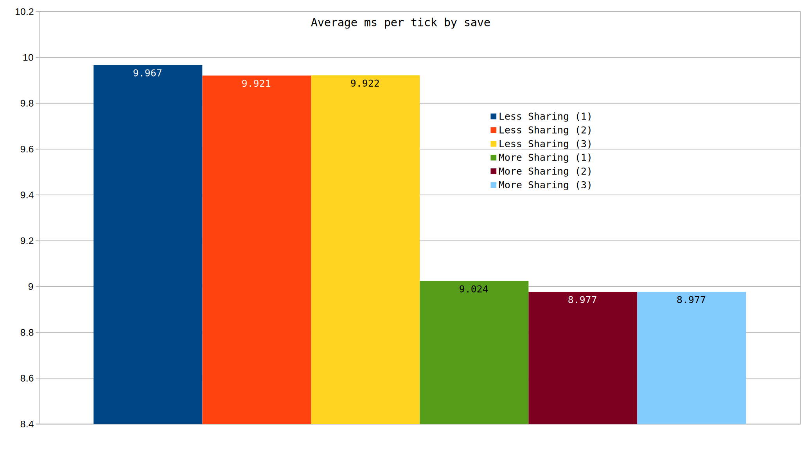

Yes, by sharing beacons more effectively, performance can be improved.
Beacon sharing is essentially getting more bang for your buck on beacon coverage. Overlapping the rows of beacons reduces the number of beacons required to achieve a target coverage. Building more compactly generally increases the coverage per beacon. In our example the top image requires 72 beacons to fully cover the 10 furnaces, while the bottom requires 88.
For this test we will set up a line of furnaces that take half a belt of ore and dump it straight into an infinity chest. Then, we will tile until we have 10000 furnaces. By increasing the space between tilings, we can either choose to overlap the horizontal beacons or not. This ensures that every entity except the beacons are exactly the same. There is a small possiblity that chunk alignment and update order issues could play a role in the performance of the designs, but that is not likely.
After we have tiled our desired 10000 furnaces, we will prime the inserters that are pulling off of belts to ensure both designs have the same inserter primed rate. Since each furnace line only consumes 0.48 of a blue belt (we are supplying 0.5), it is not likely that any inserters become unprimed. inserter_primer.lua was used to prime the inserters.
For a given 10,000 furnaces, at minimum sharing we require 120,000 beacons. Our two test cases use 56,064 and 88,000 beacons resectively. A hypothetical square achieves the maximum sharing, with a theoretical cost of 50,601 beacons.
The following command can be used to easily count the number of entities in a map, which is how those numbers were obtained. This command verifies we also didn't accidently include any additional non-beacon entities.
/c
local surface= game.player.surface
game.write_file("item_amounts.csv", "Entity_name,Entity_amount\n", true)
for _, prototype in pairs (game.entity_prototypes) do
local count = 0
for _, ent in pairs (surface.find_entities_filtered({name = prototype.name, force = "player"})) do
count = count + 1
end
if (count > 0) then
game.write_file("item_amounts.csv", prototype.name .. "," .. count .. "\n", true)
end
end
 Based on this data we can see there is a clear performance advantage to increased beacon sharing. There is roughly a 10% victory for increased sharing.
My speculation on what could have caused the performance disparity is as follows. First, to consume power the game do calculations on more entities. Second, it's possible that the game applies beacon effect radius more efficiently when it's considering fewer entities. Third, and in my opinion least likely, is that entities in beacon effect radius cause checks if that effect can be applied even if that type of entity is not able to have effects. This could easily be tested by spacing out the rows even further so the beacon effect radius doesn't hit any other beacons.
The findings of this test indicate that testing designs is going to get more difficult in the future. We will have to consider a minimum tileable unit after which we can copy that entire unit. For example if we had a design that did 10k green science a minute, copying 10 1K science a minutes would not show exactly the same performance architecture.
This finding is unlike our finding for solar panels, where it seems there is still some cost to the additional beacons.